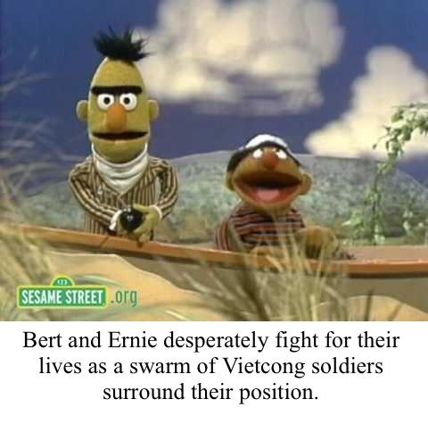
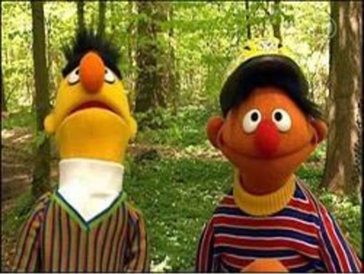
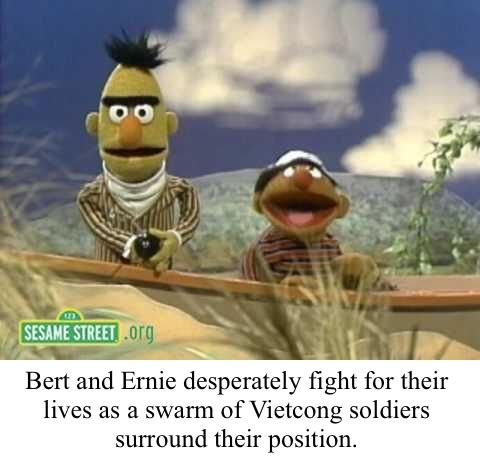
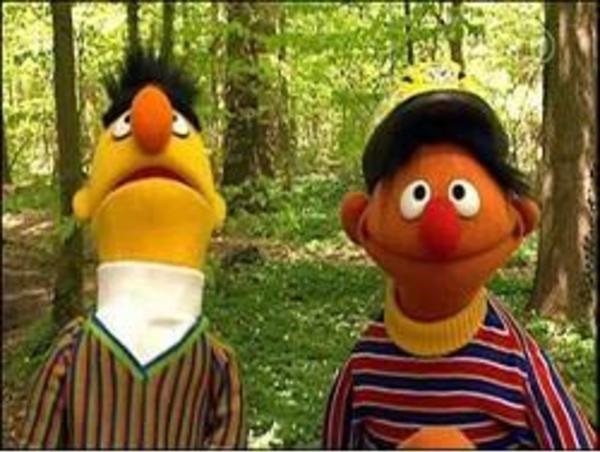

Photos
 (In this photo, Bert and Ernie fight for their lives surrounded by Vietcong)
 (Even 45 years after the war Bert still checks the trees for charlies)
Once the Vietnam war broke out, Bert and Ernie, who were hiding as humans were drafted.
While not much information from their time in Vietnam survived, these photos have been recently discovered in the national archives.
 (In this photo, Bert and Ernie fight for their lives surrounded by Vietcong)
 (Even 45 years after the war Bert still checks the trees for charlies)